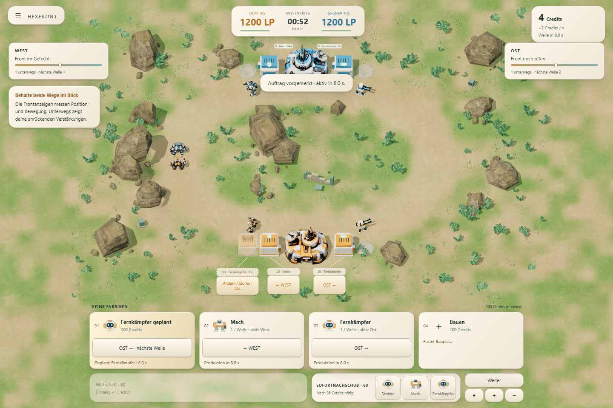
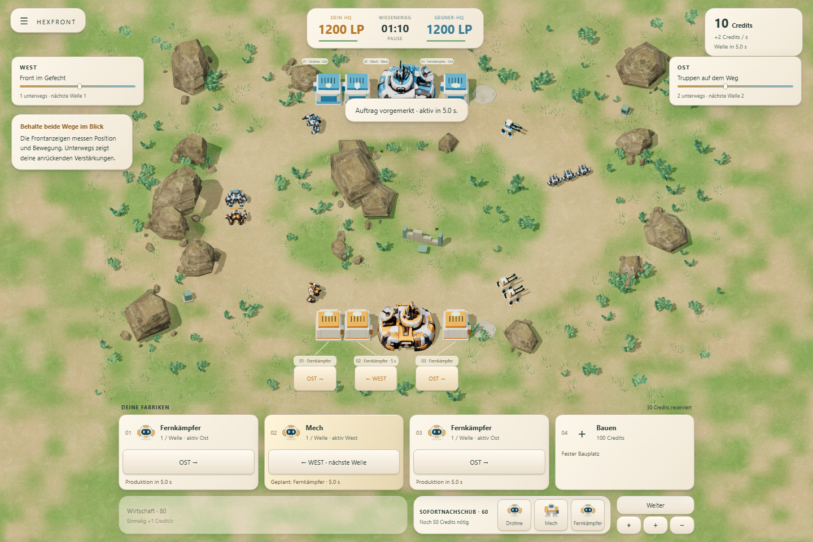
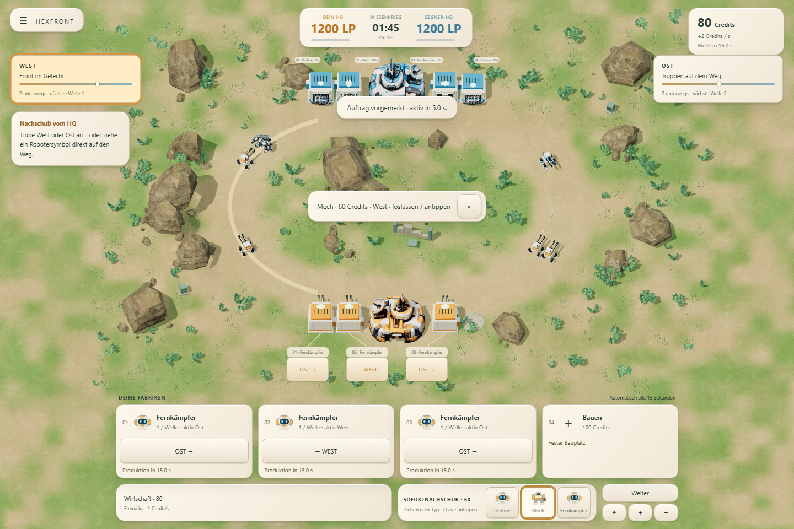
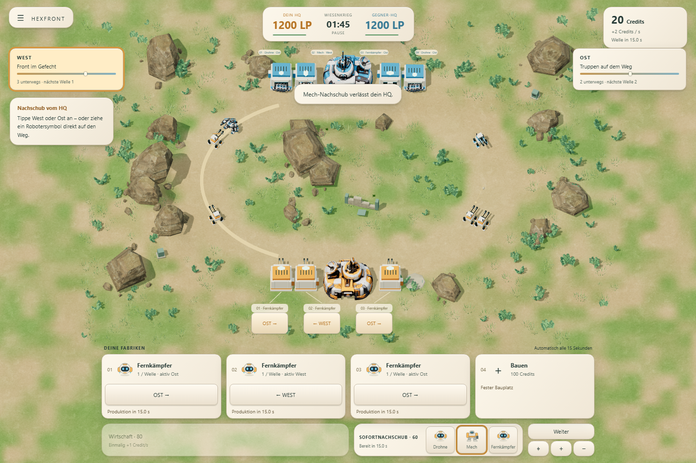
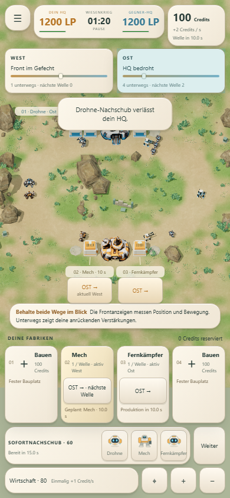
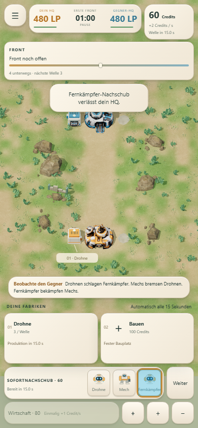
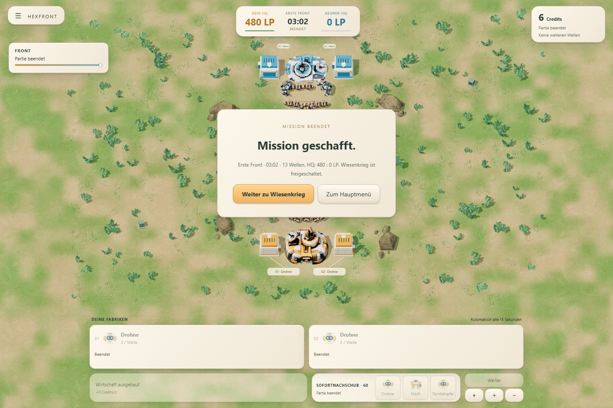
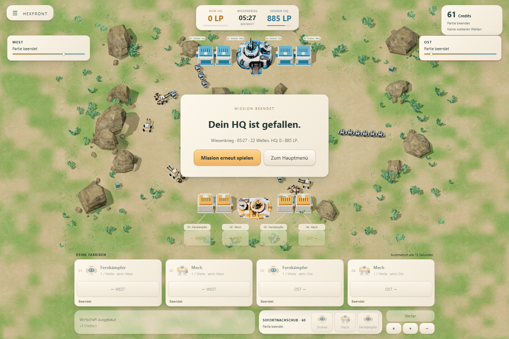

Wiesenkrieg: die erhaltene Diorama-Karte, zwei Frontanzeigen und eigene Richtungswahl je Fabrik.
Auftrag sofort sichtbar

Neubau: transparente Fabrik am richtigen Platz, Typ und Countdown, änderbarer Auftrag. Die Gebäudepfeile und Karten steuern dieselbe Lane-Einstellung.

Umrüstung: das bestehende Gebäude bleibt stehen. Die geplante Produktion wird mit der nächsten Welle aktiv.
Sofortnachschub: ziehen oder antippen
1. Einen Robotertyp im unteren HUD wählen. 2. Auf die hervorgehobene Straße ziehen und loslassen – oder anschließend die Straße beziehungsweise Frontanzeige antippen. 3. Der gekaufte Verband fährt vom eigenen HQ aus. 60 Credits und 15 Sekunden Abklingzeit gelten für beide Bedienarten.
Aufgezeichnete Browserbedienung. Die Testuhr wurde vor den Befehlen vorgerückt, um Guthaben bereitzustellen; Kauf, Abklingzeit und HQ-Ausfahrt verwenden die normalen Regeln. Das Video enthält zu Beginn den echten Ladevorgang.

Während des Ziehens: West ist markiert, Typ und Preis sind sichtbar.

Nach dem Loslassen: genau eine Abbuchung, Abklingzeit und reale HQ-Ausfahrt.
Touch und echte Spielenden

Emuliertes Smartphone: direkte Gebäudetasten, Tap-Nachschub und Kamerasteuerung. Kein physischer Gerätetest.

Eine Lane benötigt weder Richtungstasten noch eine Nachschub-Zielauswahl.


Browser und Headless-Simulation werden mit vollständigen Partien verglichen. Lange Patts bleiben in einzelnen festen Produktionsvergleichen möglich; die aktuellen Zahlen und Grenzen stehen im Ergebnisbericht.